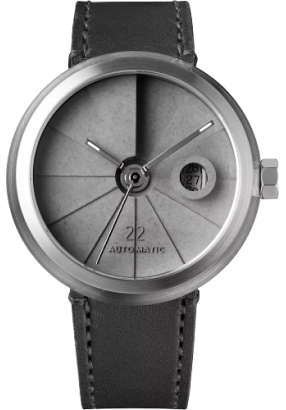
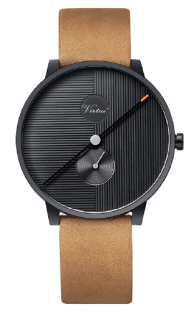

popular
Models

Son22
The watch also features a tough and
durable sapphire crystal glass and comes with a Swiss SW200-1 automatic
winding movement that has a power reserve.

Sw12
The watch also features a tough
and durable sapphire crystal glass and
comes with a Swiss Sw12-1 automatic winding
movement that has a power reserve.
Product description
Inspired by the WWI trench watch,
this timepiece has a contemporary design with an urban style
and a vintage soul. The 22 Design Studio Concrete Sector Watch
reinterprets the old timepiece with a concrete dial. Handmade
in Taiwan, the dial is cast in one piece
using the béton technique more detailed